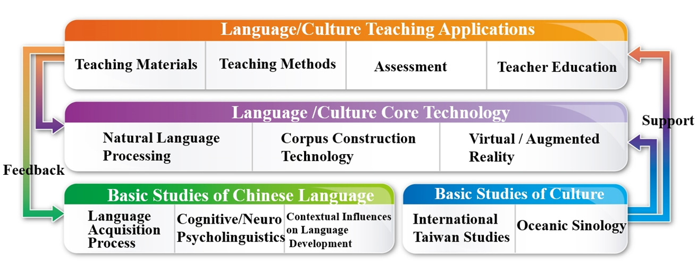
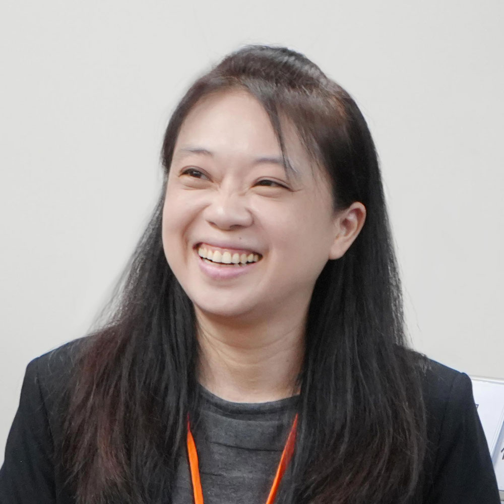
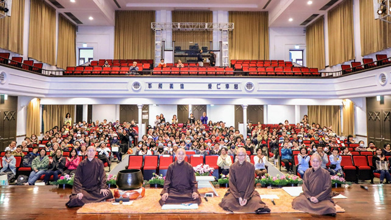
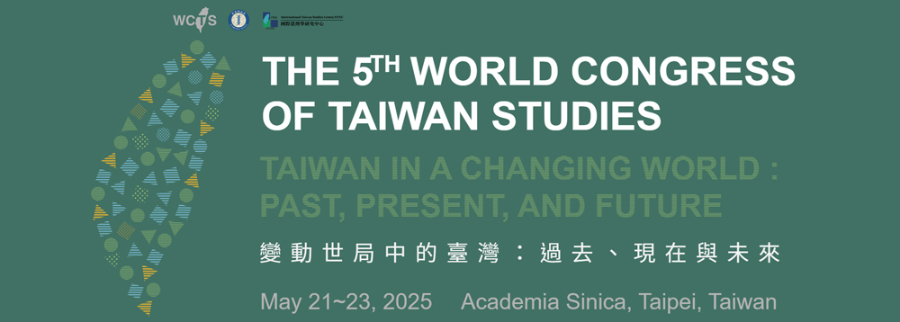

|
|
| The Featured Research Newsletter is a quarterly email that highlights new and ongoing initiatives and events from the four major featured fields at National Taiwan Normal University: the Chinese Language and Technology Center, the Institute for Research Excellence in Learning Sciences, the Social and Emotional Education and Development Center, and the International Taiwan Studies Center. |
Subscribe to future editions of the NTNU Featured Research NewsletterSubscribe |
|
|
| Featured News |
|
CLTC Introduction
Chinese Language and Technology Center (CLTC):
Merging Humanities and Technology
to Transform Language Education
At National Taiwan Normal University (NTNU), the Chinese Language and Technology Center (CLTC) is redefining Chinese language education by integrating the depth of the humanities with the power of advanced technology. Under the leadership of Chair Professor Yao-Ting Sung (Executive Director) and Associate Professor Jun-Ren Lee (Director), CLTC stands at the forefront of interdisciplinary innovation—bridging language acquisition, cultural studies, and artificial intelligence to foster a human-centered approach to educational technology.
CLTC’s Four Core Research Areas
CLTC unites specialists from linguistics, psychology, education, cultural studies, and information engineering to conduct research across four key domains:
- Language Acquisition – Explores cognitive and developmental foundations of Chinese language learning.
- Core Language Technology – Advances natural language processing (NLP), big data analysis, and AR/VR tools for digital learning enhancement.
- Teaching & Assessment – Develops AI-driven learning platforms, innovative teaching materials, and adaptive evaluation systems.
- Cultural Education – Promotes Taiwan Studies, Oceanic Sinology, and digital culture education to foster global cultural engagement.
Beyond academic research, CLTC supports underserved communities, boosts Taiwan’s global visibility, and contributes to the future of the Chinese language industry.

Figure 1: Cross-Disciplinary integration of CLTC’s four research pillars.
|
|
|
Cover Story
Dr. Jia-Fei Hong:
Bridging Corpus Linguistics and Digital Innovation
in Teaching Chinese as a Second Language

Dr. Jia-Fei Hong, Associate Dean of the College of International Studies and Social Sciences and Chair of the Department of Chinese as a Second Language at National Taiwan Normal University (NTNU), is a prominent scholar at the intersection of linguistic research and digital pedagogy. In recognition of her early academic excellence, she received the Best Ph.D. Dissertation Award from the Linguistic Society of Taiwan in 2010.
Her research encompasses Chinese lexical semantics, corpus linguistics, and Chinese grammar, with an increasing emphasis on integrating technology into language instruction. Dr. Hong is known for her leadership in developing adaptive, learner-centered platforms that have transformed the way Chinese as a Second Language (CSL) is taught and assessed.
|
|
|
| Additional News and Highlights |
|
Research News
Quantifying the Unseen:
Dr. Jia-Fei Hong Develops Sentence Difficulty Index
for Chinese Language Learning
Dr. Jia-Fei Hong, Associate Dean of the College of International Studies and Social Sciences and Chair of the Department of Chinese as a Second Language at National Taiwan Normal University, has introduced a groundbreaking tool to assess sentence difficulty in Chinese—a crucial yet often overlooked element in language learning.
Published in Forum for Linguistic Studies, Dr. Hong's research addresses a long-standing challenge: how to scientifically measure the complexity of individual sentences in Chinese. While sentence difficulty is fundamental to reading comprehension and language acquisition, previous efforts to define and measure it lacked consistency and practical value.
Read the full paper here: https://doi.org/10.30564/fls.v6i4.6737
|
|
|
Research News
From Lab to Tabletop: NTNU CKIS Team Launches Innovative Chinese Character Learning Game
Blending cognitive science, Chinese language pedagogy, and playful design, the Chinese Key-Image Strategy (CKIS) Team at National Taiwan Normal University (NTNU) has developed an educational board game, Playing Chinese Characters with Key-Images. Unveiled at the 2025 Taipei International Book Exhibition by Professor Li-Yun Chang, the game introduces a fresh, research-based approach to Chinese character learning—especially for beginners.
Game-Based Learning Meets Cognitive Research
Led by Chair Professor Hsueh-Chih Chen, Professors Zhen-Xing Lin and Li-Yun Chang, the CKIS team has been conducting cross-disciplinary research since 2015, supported by NTNU’s Chinese Language and Technology Center (CLTC). Their work spans publications, apps, teaching aids, and learning materials designed to make Chinese characters more accessible.
The new board game features 78 key radicals and high-frequency characters, each illustrated with "key-images"—visual mnemonics that connect character forms and meanings. With multiple game modes, learners can build recognition, recall, and confidence through active, collaborative play.
|
|
|
Engagement News
Love and Deep Listening: The Path to Inner SelfSEED Center Hosts Transformative Lecture
on Mindfulness and Well-Being
In an age marked by constant stimulation and rising stress levels, the quest for inner peace has become more vital than ever. Responding to this growing need, the Social Emotional Education and Development Center (SEED) at National Taiwan Normal University (NTNU), in collaboration with the Plum Village International Mindfulness Practice Center, hosted an inspiring public lecture titled “Love and Deep Listening: The Path to Inner Self” on March 15, 2025.
The event featured Dharma Teacher Sister Tuệ Nghiêm from Plum Village, France, along with three esteemed Dharma Teachers, who shared meaningful teachings and practical insights on mindfulness and emotional well-being. Together, they guided participants on a journey toward deeper presence, focus, and inner wisdom.

Figure 4: Dharma Teacher Sister Tuệ Nghiêm guiding faculty and students in exploring inner self.
|
|
|
Upcoming Events
2025 National Conference on Linguistics (NCL)
at NTNU
The National Conference on Linguistics (NCL) will be held on October 25-26, 2025, at National Taiwan Normal University (NTNU), Taipei. Organized by the NTNU Chinese Language and Technology Center, the event provides a key platform for linguistic scholars and students to engage in academic exchange.
This year’s theme, “New Narratives on Language: Transformation and Diversity,” will explore language evolution and its diverse developments. The conference will feature keynote speeches, invited talks, workshops, and paper presentations.
Aiming to support young researchers, the NCL offers student presenters expert guidance from invited discussants. Since 2000, the conference has played a vital role in advancing linguistic studies in Taiwan.Scholars and students are encouraged to participate in this enriching event, fostering professional growth and interdisciplinary dialogue in linguistics.
For more detailed on the conference, visit: https://top.ntnu.edu.tw/2025NCL/CH/home.aspx
|
|
|
Upcoming Events
The 5th World Congress of Taiwan Studies
Co-organized by Academia Sinica
and National Taiwan Normal University.

The 5th World Congress of Taiwan Studies (WCTS) is set to be held in person at Academia Sinica in Taipei, Taiwan, from May 21 to 23, 2025. Co-organized by Academia Sinica and the International Taiwan Studies Center at National Taiwan Normal University (NTNU), the congress will convene leading scholars and experts from around the world.
This year’s theme, “Taiwan in a Changing World: Past, Present, and Future,” invites interdisciplinary dialogue on Taiwan’s evolving global connections through historical, contemporary, and forward-looking lenses. Fields represented will include history, philology, archaeology, ethnology, economics, law, political science, linguistics, sociology, literature, and philosophy.
As a major international platform for advancing Taiwan Studies, the congress aims to foster meaningful academic exchange and strengthen global research networks. Scholars, students, and professionals are warmly invited to attend and help spread the word about this landmark event.
For more details, please visit: https://wctsv.project.sinica.edu.tw/english/english_index.html
|
|
|
| Awards & Honors |
|
Featured Research Center Scholars
Ranked Among the World's Top 2% Scientists in 2024
The August 2024 update of the “Updated Science-Wide Author Databases of Standardized Citation Indicators” has once again highlighted outstanding researchers from National Taiwan Normal University (NTNU). Scholars affiliated with NTNU’s Featured Research Centers have been ranked among the world’s top 2% scientists, reflecting their exceptional contributions to global scientific advancement.
Related Links : World’s Top 2% Scientists 2023
|
|
|
Dr. Silvia Wen-Yu Lee Honored with the 2025 Outstanding Research Award from
the National Science and Technology Council, Taiwan
The National Science and Technology Council, Taiwan, has awarded Dr. Silvia Wen-Yu Lee the prestigious Outstanding Research Award for 2025, recognizing her remarkable contributions to the field of technology-enhanced learning.
As a Distinguished Professor at the Graduate Institute of Information and Computer Education and a member of the Institute for Research Excellence in Learning Sciences, Dr. Lee has been at the forefront of research in E-learning, Virtual Reality, Science Education, and Computational Thinking. Her pioneering work has significantly advanced innovative educational methodologies, enhancing digital learning environments and fostering new teaching strategies. This award highlights Dr. Lee’s dedication to academic excellence and her impact on the intersection of technology and education. Her contributions continue to shape the future of learning, inspiring educators and researchers worldwide.
Congratulations to Dr. Lee on this well-deserved recognition!
|
|
|
|
|